As mais novas novidades da Samsung!
Conheça os produtos!
As 12 melhores novidades:
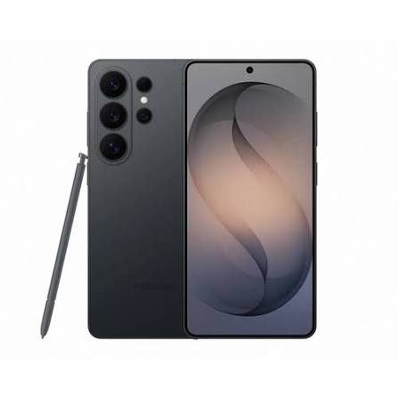
1. Samsung Galaxy S26 Ultra
Lançado em 11 de março de 2026 por US$ 1.299 (R$ 9.999), o Galaxy S26 Ultra é o topo de linha em titânio da Samsung focado em IA e fotografia avançada.
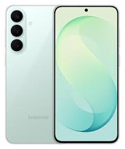
2. Samsung Galaxy S26 FE
Lançado em setembro de 2026 por US$ 649 (R$ 4.999), o Galaxy S26 FE entrega a experiência flagship da linha S com foco em custo-benefício e recursos de IA.
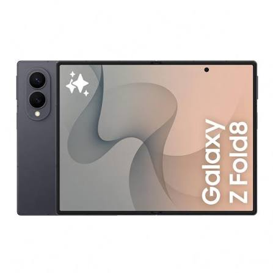
3. Samsung Galaxy Z Fold8
Lançado em julho/2026 por US$ 1.899 (R$ 13.799), o Z Fold8 é o dobrável fino com dobra na tela imperceptível.
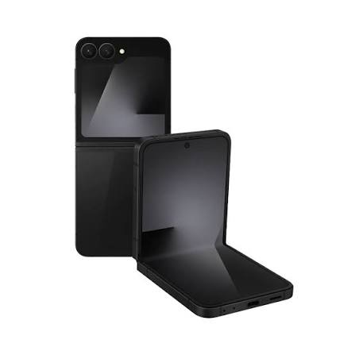
4. Samsung Galaxy Z Flip FE
Lançado em julho/2026 por US$ 899 (R$ 6.499), o Z Flip FE é o dobrável de bolso mais acessível da linha.
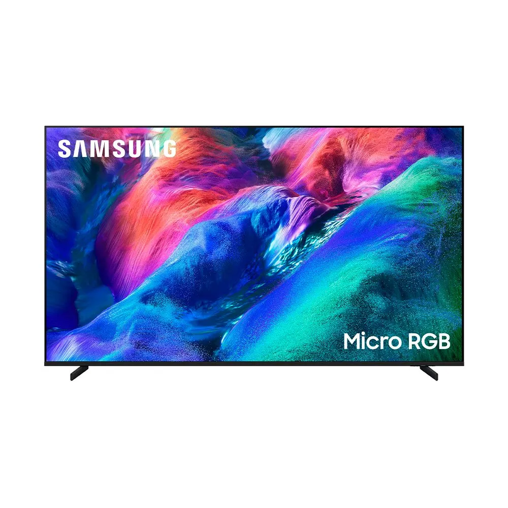
5. Samsung Smart TV Micro RGB
Lançada em janeiro/2026 por US$ 29.999 (R$ 179.999), a Smart TV Micro RGB é a tela ultrafina de luxo com cores superintencas.
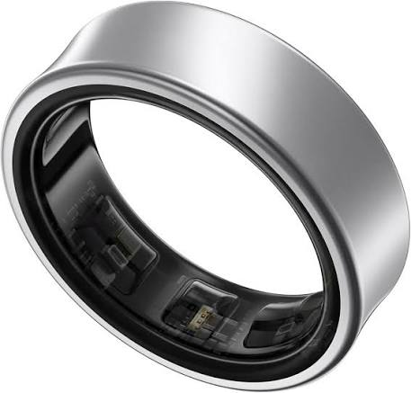
6. Samsung Galaxy Ring 2
Lançado em julho/2026 por US$ 399 (R$ 2.499), o Galaxy Ring 2 é o anel inteligente para monitoramento avançado de saúde e sono.
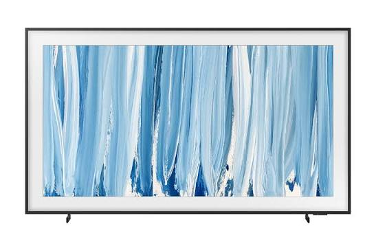
7. The Frame Pro
Lançada em abril/2026 por US$ 1.999 (R$ 11.999), a TV em formato de quadro traz tela fosca antirreflexo e espessura inferior a 3 cm.
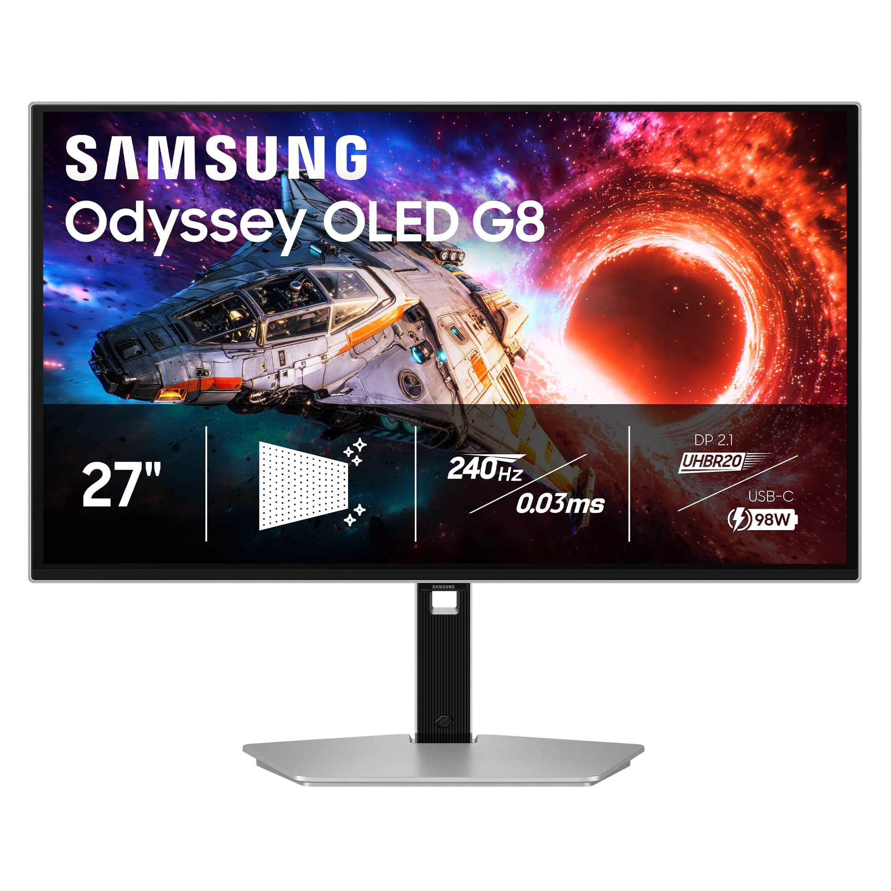
8. Samsung Odyssey OLED G8
Lançado em agosto de 2026 por US$ 1.299 (R$ 10.999), o monitor gamer traz tela QD-OLED 4K de 32 polegadas com painel antirreflexo e 240 Hz.
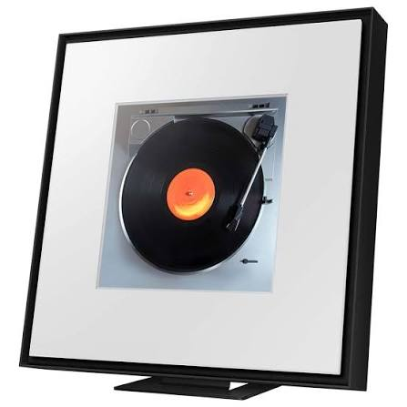
9. Samsung Music Frame
Lançado em abril/2026 por US$ 399 (R$ 2.999), o Music Frame é uma caixa de som sem fio em formato de porta-retratos decorativo.
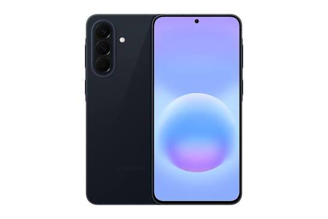
10. Samsung Galaxy A57
Lançado em abril de 2026 por US$ 449 (R$ 2.699), o smartphone intermediário traz tela Super AMOLED de 120 Hz e acabamento em alumínio.
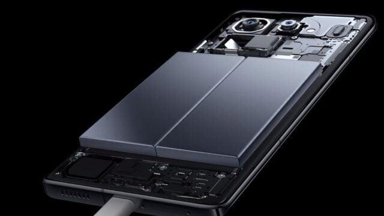
11. Baterias de Silício-Carbono
Lançadas em julho/2026 por US$ 99 (R$ 699), as novas baterias oferecem maior capacidade energética sem aumentar a espessura.
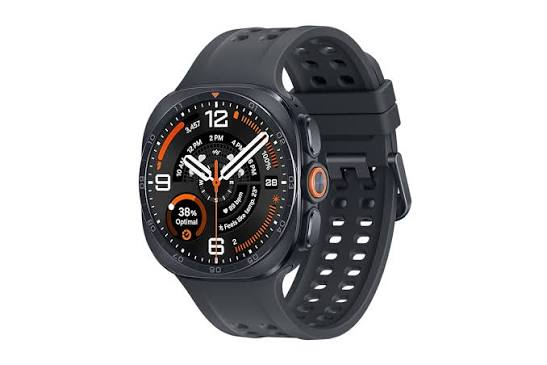
12. Samsung Galaxy Watch Ultra 2
Lançado em julho de 2026 por US$ 649 (R$ 4.999), o smartwatch robusto em titânio conta com GPS de dupla frequência e bateria de até 100 horas.